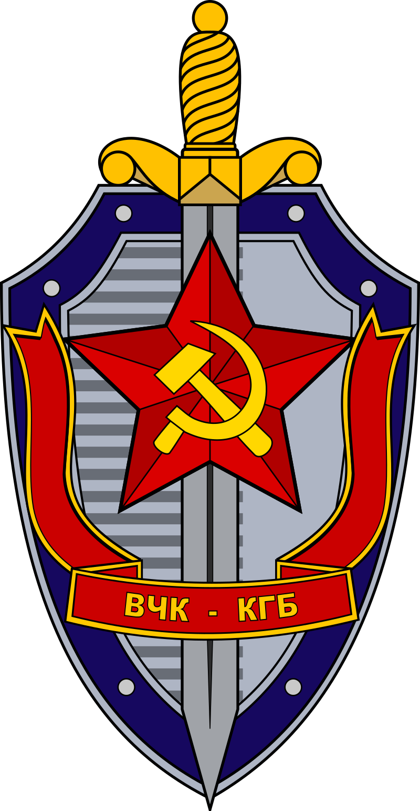
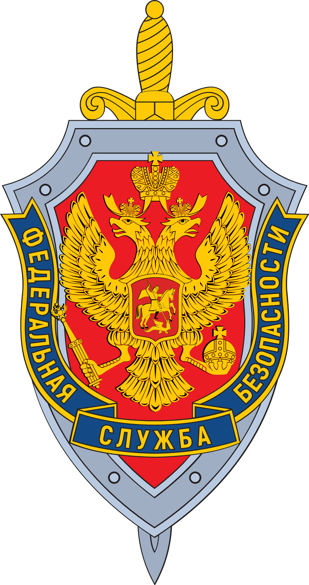

Недействующая ссылка или недоступная страница
Если вас перенаправили сюда, это значит что в данный момент страница на которую вы хотели перейти недоступна или находится в стадии разработки. Потерпите, пожалуйста. А пока перейдите на главную страницу сайта.
Внимание!!! С 01.01.2021 раздел новости прекращяет работу. Если после 01.01.2021 при переходе на новости вас перекинуло сюда это означает, что раздела новости больше нету.
